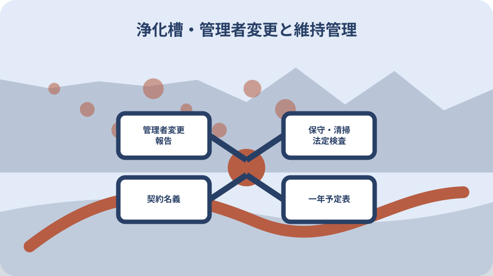

先に結論を確認する
この記事の答え：設備票として合併・単独、処理方式、人槽、製造者、設置年を確認し、保守点検、清掃、法定検査の三列へ直近記録と次回時期を記します。法上の浄化槽管理者、保守点検等の契約名義、居住者、料金支払者は別欄にし、管理者が変わる場合は変更後30日以内の県への報告方法も確認します。
森町で最初に照合する条件：現地の浄化槽を合併・単独、処理方式、人槽、製造者、設置年で特定し、売主説明だけで設備種別を決めない。
設備票と三つの維持管理記録を一枚で引き継ぐ
森町で浄化槽付き住宅を引き継ぐときの結論は、設備があると確認して終えることではありません。合併・単独、処理方式、人槽、製造者、設置年を設備票へ書き、保守点検、清掃、法定検査を三列に分けて直近記録と次回時期を並べます。
森町は、保守点検を年3～4回以上、清掃を年1回以上、法定検査を年1回と案内しています。三つは呼び方が似ていても別の業務です。売主から『毎年業者が来ている』と聞いただけでは、どの業務がいつ済んだかを確定しません。
引継ぎ票には実施日、事業者名、作業または検査の名称、結果、支払者、次回予定、原本の保管場所を置きます。記録が見つからない期間は空欄で消さず『記録欠落』とします。実施済みという家族の記憶は、確認先を探す手掛かりとして別欄に置きます。
この整理は法的判定を所有者だけで行うためではありません。引渡し前に何が分かり、誰へ何を尋ねるかを明確にするためです。町公式、環境省、検査機関、保守点検・清掃の各事業者から得た回答を、同じ設備番号へ戻せる形にします。
母屋、離れ、店舗部分に別設備がある場合は、一枚へ合算しません。設備ごとに仮番号を付け、排水する建物、銘板、点検口、契約書を対応させます。一つの検査票を敷地全体の証明として流用せず、記載された設備を特定します。
合併・単独と処理対象を現物資料で特定する
森町は、合併処理浄化槽をトイレ排水と台所、風呂、洗濯などの生活雑排水を併せて処理する設備、単独処理浄化槽をトイレ排水だけを処理する設備と説明しています。住宅広告の『浄化槽』だけでは、どちらか分かりません。
設備の種別は、設置届、工事資料、銘板、保守点検記録、法定検査結果など複数資料で照合します。売主や親族の呼び方だけで決めず、資料名と確認日を残します。台所や風呂の排水先が不明なら、配管経路を設備業者へ確認する事項にします。
森町公式は、平成13年4月から新たに設置する場合は合併処理浄化槽が義務付けられたと案内しています。ただし建物の築年だけで既設槽の種別を推定しません。増改築や設置替えの履歴があるかもしれないため、実物資料へ戻ります。
種別欄の横には『処理対象』を文章で書きます。トイレだけか、生活雑排水を含むかを明示すると、排水配管や将来の設置替え相談へつながります。公的説明と現地の確認結果が食い違う場合は、現状を自己判断せず専門事業者へ調査を依頼します。
設置年・人槽・処理方式・製造者を設備票へ写す
設備票の識別項目は、設置場所、設置年、使用開始年、製造者、型式、処理方式、人槽です。銘板を撮影できる場合は全景と文字の近接写真を分け、撮影日を付けます。読めない文字を推測で補わず、保守点検記録や設置資料と照合します。
人槽は現在の居住人数と同じとは限りません。設備の処理対象人員と実際の使用人数を別欄にします。森町の令和8年度補助案内も人槽別の金額を示し、算定基準へのリンクを置いていますが、手元の既設槽の人槽は現物資料で確認します。
ブロワ、制御盤、ポンプなど付属機器も設備番号へひも付けます。交換年月、型式、保証書、電源位置を記録します。槽本体の設置年と機器交換年を一つの日付にまとめると、どの部品が古いか分からなくなります。
設置届や完成図が見つからない場合は『設置資料なし』とし、売主、施工者、保守点検事業者、所管窓口へ確認する順番を決めます。資料がないこと自体を直ちに違反と決めず、現状確認に必要な情報を専門家へ具体的に伝えます。
保守点検の作業内容と次回時期を独立して読む
環境省は保守点検について、装置が正しく働くかの点検、機器の調整・修理、スカムや汚泥の状況確認、清掃時期の判定、消毒剤の補充などを行うと説明しています。単なる外観確認ではありません。記録票の作業項目と指摘を読みます。
森町の案内は保守点検を年3～4回以上としていますが、環境省は処理方式や処理対象人員で回数が異なると説明しています。設備票へ一律の回数を転記せず、対象設備の方式と契約内容を事業者へ確認して次回日を決めます。
過去記録は、実施日、担当者、薬剤補充、機器調整、汚泥状況、修理提案、次回予定を抜き出します。領収書に『点検代』としかない場合は作業記録の所在を尋ねます。金額の支払履歴と技術記録を別資料として保管します。
引渡し前後で契約者が変わるなら、最終点検日と次回予約のどちらを旧所有者が担うか決めます。口頭で『業者はそのまま』とせず、事業者名、連絡先、契約番号、名義変更の方法、緊急連絡先を確認します。
修理提案が残っているときは、提案日、対象機器、不具合の説明、応急対応、見積りの有効期限を分けます。実施済みか不明なら機器の外観だけで判断せず、事業者へ確認します。次の所有者が同じ見積書をそのまま発注できるとも決めません。
清掃記録を保守点検の領収書と混ぜない
清掃は保守点検とは別の業務です。森町は年1回以上の実施を案内し、環境省は槽内の汚泥やスカムの引き抜き、洗浄などを含む作業として説明しています。点検事業者の訪問回数が多くても、清掃済みとは扱いません。
清掃記録には実施日、清掃業者、作業内容、引抜量など記載された項目、次回目安、領収書番号を対応させます。名称が『汲み取り』だけの場合は、住宅の浄化槽清掃としてどの作業を行った記録か事業者へ確認します。
内覧時には清掃車が接近できる経路、点検口周辺、門扉、駐車車両、植木、物置を確認します。作業車が入れることと法的な清掃義務は別ですが、現実の維持管理費と作業性に影響します。写真へ道路側からの経路を残します。
過去の清掃記録が欠けているとき、日付を推定して予定表を閉じません。旧所有者、清掃業者、保守点検事業者へ照会し、確認できない期間を明示します。そのうえで現状から必要な清掃時期を専門事業者へ相談します。
法定検査の種類・判定・改善事項を時系列にする
環境省は法定検査として、使用開始後3～8か月以内の設置後等の水質検査と、毎年1回の定期検査を案内しています。既設住宅の引継ぎでは、直近の検査結果だけでなく、検査の種類を確認します。
森町は法定検査の検査機関として一般財団法人静岡県生活科学検査センターを案内し、県の問い合わせ先も掲載しています。検査票が見つからない場合は、対象設備、住所、旧管理者名、分かる範囲の検査時期を整理して照会方法を確認します。
検査結果は受検日、検査種別、判定、指摘事項、改善期限、改善を依頼した事業者、再確認日へ分けます。『受検済み』の一語では、改善事項が残っているか分かりません。保守点検記録と対応する指摘がある場合は資料番号で結びます。
環境省は保守点検と清掃の記録を3年間保存する義務を案内しています。引渡しでは最低限の保存年限だけを切り取らず、設備履歴として残っている過去記録も年代順に整理します。保存義務の判断に迷う書類は検査機関や所管窓口へ確認します。
改善対応の領収書があっても、法定検査の判定が自動で変わったとは扱いません。指摘へ何を行ったかを記録し、再検査や次回検査での確認要否を検査機関へ尋ねます。業者の作業完了と公的検査の結果を別欄に保ちます。
法上の管理者変更と契約名義の切替を別欄にする
戸建住宅では、所有者、実際の居住者、法上の浄化槽管理者、保守点検・清掃等の契約名義人、料金の支払者が同じとは限りません。相続による承継確認中や賃貸中なら特に分かれます。設備票に五つの役割を別欄で置き、氏名、連絡先、確認根拠を記します。
静岡県は、浄化槽管理者に変更があったとき、変更後30日以内に浄化槽管理者変更報告書が必要と案内しています。県の様式ページは、新たに浄化槽管理者となった人が提出する書類と説明しています。売買の引渡日や相続登記日から期限を自己計算せず、誰がいつ管理者になったかと提出期限を西部健康福祉センター環境課へ確認します。
県への管理者変更報告と、民間事業者との保守点検・清掃契約、検査案内の送付先、料金の支払方法は別手続きです。報告書を出せば契約名義や口座も自動で変わるとは扱いません。各欄に申込日、受付先、受付者、完了日を残します。
空き家期間がある場合でも、使っていないから電源を切ってよいとは判断しません。環境省は電気設備のある浄化槽の電源を切らないことを使用上の注意に挙げています。休止や再開の扱いは設備事業者と所管窓口へ確認します。
賃貸人と賃借人の役割分担は契約書で明確にします。日常連絡を居住者、民間契約と費用を所有者が担うなど分かれる場合でも、その取り決めだけで法上の浄化槽管理者が決まるとは書きません。管理者の該当関係と必要な報告は県へ確認し、異常時の連絡経路は別に作ります。
相続では、管理を引き継ぐ人が確定した日、県へ管理者変更を報告した日、事業者が契約名義を変更した日を分けて記録します。相続を『引渡日』で扱わず、承継関係を確認している間の連絡担当と支払方法も決めます。故人名義の口座停止で引落しが途切れないかを確認し、個別の届出と契約承継はそれぞれの窓口へ尋ねます。
電源・通気口・点検動線を内覧時に確かめる
環境省は、浄化槽の電源を切らない、上部や周辺へ保守点検・清掃を妨げる構造物を置かない、過大な荷重を掛けない、通気口を塞がないと案内しています。内覧では室内設備だけでなく、庭の浄化槽周辺を確認します。
ブロワの電源、作動音、配線、雨よけ、点検口、通気口、清掃車からの経路を写真に残します。異音や臭気を所有者だけで診断せず、いつ、どこで、どの条件で気づいたかを記録し、保守点検事業者へ見てもらいます。
点検口の上に物置、植木鉢、ウッドデッキ、駐車車両がある場合は、移動できるか、作業に必要な空間があるかを確認します。見た目を整える工事が点検を妨げないよう、改修計画を設備位置図へ重ねます。
雨水排水や屋外水栓の位置も確認します。雨水や特殊な排水を浄化槽へ流すかどうかを見た目で判断せず、配管図と現地を設備業者へ示します。配管変更を伴う改修は、工事前に必要な届出や確認を所管窓口へ尋ねます。
点検口付近は安全を確保し、所有者だけで蓋を開けたり槽内をのぞき込んだりしません。写真撮影や銘板確認も事業者の案内に従います。内覧票は専門作業の代用ではなく、危険箇所と質問を持ち帰るために使います。
記録欠落を埋める連絡順と未確認表示を決める
記録が足りないときは、旧所有者または相続人、保守点検事業者、清掃事業者、法定検査機関、町の担当窓口という順に、質問を業務別へ分けます。一か所へ『全部教えてください』と頼まず、設備特定情報と知りたい期間を示します。
照会表には質問日、相手、伝えた設備情報、回答、根拠資料、次の連絡先を書きます。電話回答は担当部署と日時を記録し、正式な書類が必要なら取得方法を確認します。回答が得られない項目は『未実施』でなく『確認不能』とします。
検査記録があるのに清掃記録がない、領収書はあるが設備型式が違うなどの食い違いは消しません。資料番号を振って両方を残し、別の設備の書類が混ざっていないか確認します。古い住宅では母屋と離れに複数設備がある可能性も見ます。
個人情報を含む契約書や検査票を家族・専門家へ共有するときは、共有目的と範囲を決めます。原本の所有者、保管場所、複写の作成者を記録します。事業者の記録開示可否は、自分たちで決めず各事業者へ確認します。

既設槽の引継ぎと設置替え補助を別表にする
森町の令和8年度補助案内は、公共下水道等の予定がない区域で浄化槽を新設する人や、単独処理浄化槽・くみ取り便所から合併処理浄化槽へ設置替えする人を対象としています。中古住宅を買うだけで補助対象になるとは書かれていません。
補助対象には、自ら居住する建築物、公共下水道認可区域外、販売目的でない住宅など複数要件があります。既設設備の維持管理表とは別に、将来工事の候補表を作り、区域、居住、建物用途、工事内容を上下水道課へ事前確認します。
森町は交付申請書提出後、交付決定日以降に着工すること、申請から完成検査まで同一年度内であることを案内しています。老朽化を見つけても、補助利用を考えるなら先に工事契約や撤去を進めず、現行年度の公式案内を確認します。
令和8年度案内には交付申請・実績報告の添付一覧、提出確認表、施工写真確認表があります。これらは新たな工事の申請資料です。過去設備の維持記録と混ぜず、『現況確認』『補助相談』『申請』『着工』『実績報告』の工程を分けます。
大石の視点：住宅価格より先に維持管理の空白を測る
ここからは公的説明ではなく、私、大石浩之の実務上の提案です。浄化槽付き住宅では、交換費用だけを先に概算するより、設備を特定できるか、三つの維持管理記録が何年分つながるか、点検動線が確保されているかを先に見ます。
私は内覧表を四区画に分けます。左上に槽本体と付属機器、右上に保守点検、左下に清掃、右下に法定検査を置きます。各区画へ最新日と欠落期間を入れると、『業者が来ている』という曖昧な説明が、確認できた業務と未確認の業務へ分かれます。
記録の空白は直ちに故障や違反を意味しませんが、引渡し後の確認費、緊急対応、日程調整に影響します。売主へ責任を決め付ける材料にせず、契約前に現況点検を依頼するか、資料取得を条件にするか、購入後の予備費を持つかを話し合います。
売却未定の実家でも同じ表を使えます。親が契約していた事業者や検査日を、住めなくなってから探すのは負担です。今のうちに設備票と三列記録を作ることは、住み続ける選択にも、賃貸、売却、解体を考える選択にも共通する準備です。
引渡し後一年の予定表へ三業務を配置する
最終的に、引渡日から一年の横軸へ保守点検、清掃、法定検査を別々の印で置きます。過去の最終実施日から自動計算するのでなく、設備方式、記録、事業者回答を基に次回時期を確認します。名義変更日と支払予定も同じ月へ入れます。
予定表には異常時連絡先、停電時の確認先、点検口を塞ぐ工事の禁止表示、長期不在時の連絡担当も書きます。家族の誰か一人だけが知る状態を避け、住宅資料箱とデジタル控えの両方から見つけられる索引を作ります。
公式情報は森町の使用者向けページ、令和8年度補助ページ、環境省の浄化槽Q&Aで確認します。ページ更新日と自分が確認した日を分け、翌年度に工事や補助申請を行うなら、その年度の町公式へ戻ります。古い金額や様式を流用しません。
今日できる一歩は、庭の設備を開けることではなく、手元の検査票、点検記録、清掃領収書を三つの山へ分けることです。次に設備の型式と最終日を対応させ、欠けた列だけを事業者へ尋ねます。この順序なら安全を損なわず、引継ぎの空白を具体化できます。